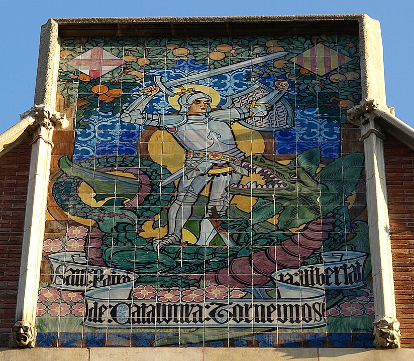
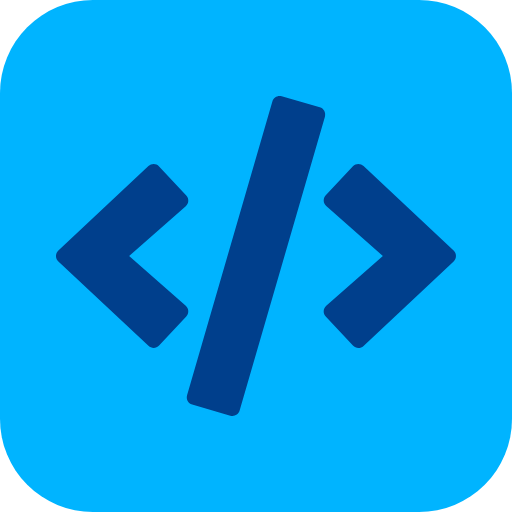
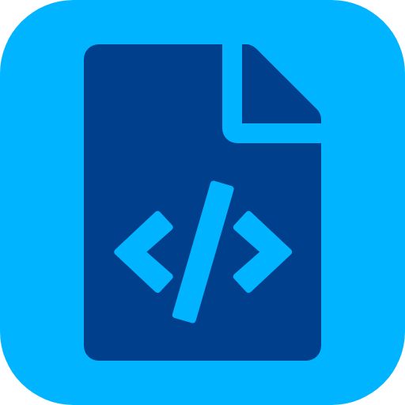
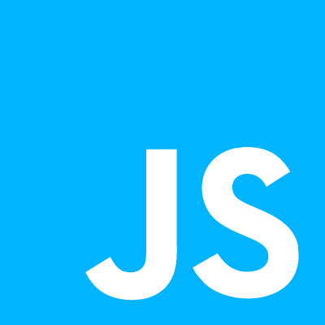
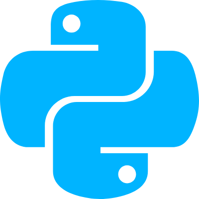

Mijn eerste ervaring met computers en computer code kwam er
door het fixen van nukkige video-spelletjes in de MS-DOS command
line. Nooit gehoord van MS-DOS? Dat ging toenzo....
Wat ooit begon als hobby met het configureren van spelletjes en
het repareren van pc's en telefoons, is nu geëvolueerd tot het
bouwen van complete web applicaties.
Maar met computers werken doe ik niet voor mezelf. De meeste
voldoening en het grootste plezier haal ik uit het kunnen helpen
van anderen met het verlichten van hun IT bekommernissen.
Technologie ontwikkelen en inzetten als hefboom om je persoonlijke
of zakelijke impact te vergroten, daar help ik graag aan mee.
Naast mijn werk op het web ben ik ook gefascineerd door
cryptografie en de mogelijke toepassingen met digitale
sleutels voor beveiliging of nieuwe vormen van geld en
betalingen zoals . Vandaar ook de verwijzingen naar zaken zoals
of TOR Onion Router diensten die je vindt helemaal onderaan op
deze pagina.
Maar de digitale wereld is niet alles en lang geleden zei men
al:
mens sana in corpore sano. Dus in
mijn vrije tijd vind je mij regelmatig wandelend in de natuur
met de hond en krachttraining houdt me fit en sterk. Ik trap ook
nog wel eens graag tegen een bal.
In een vorig hoofdstuk was ik actief als logistiek medewerker;
de liefde bracht me vervolgens naar Catalonië; en een
Master in de Vergelijkende Politiek leidde tot een episode in de
journalistiek. Voor zij die graag lezen en net als ik Catalonië
een warm hart toedragen, vind je hieronder nog een selectie van
eigen publicaties uit de oude doos:
Boeken, rozen en vrijheid
Een dagje door de straten van Barcelona om de temperatuur op
te meten van het Catalaanse politieke proces.
Lees op Doorbaak.be

Het Huiswerk van de Catalanen (Deel I)
Joris Raymaekers, een van onze Doorbraak-medewerkers in
Barcelona, meet de politiek temperatuur op in Catalonië.
Lees op Doorbraak.be
Het Huiswerk van de Catalanen (Deel II)
Het voortschrijdende Catalaanse proces van nationale transitie
transformeert geleidelijk aan het Catalaanse politieke
landschap.
Lees op Doorbraak.be
Wat ik kan doen voor jou
Advies op maat voor jouw aanwezigheid op het web
Gepersonaliseerd advies om ervoor te zorgen dat je online
aanwezigheid precies aansluit bij jouw doelen en visie.
Website ontwikkeling, onderhoud en optimalisatie
Creëren van dynamische en moderne web apps met behulp van het
uitgebreide JavaScript ecosysteem van bibliotheken en het
meest recente digitale gereedschap.
Bouwen en beheren van Wordpress websites
Expertise in het bouwen en beheren van WordPress websites met
DIVI en WP-Bakery voor een naadloze en flexibele ervaring.
Crossplatform web apps met ReactJs en React Native
Krachtige en gebruiksvriendelijke crossplatform
web-applicaties met behulp van de nieuwste technologieën zoals
React en React Native.
Server app ontwikkeling met NodeJs
Maak gebruik van de snelheid en schaalbaarheid van Node.js
voor het bouwen van robuuste serverapplicaties met JavaScript.
Ben je technisch aangelegd? Scroll dan zeker verder naar een
overzicht van mijn technische vaardigheden. Bekijk enkele
voorbeelden, volg de Github-links naar broncode of grasduin door de
uitgelichte creaties op Codepen...
Technische vaardigheden
Een overzicht van mijn technische competenties


Van ontwerp naar code
front-end ontwikkeling
UI/UX implementatie
Vele websites — waaronder deze eigenste site, worden
ontworpen met een ontwerpprogramma zoals AdobeXd of Figma en
vervolgens omgezet naar de code van het web in HTML5, (S)CSS
en JavaScript. Daarbij wordt bijzondere aandacht geschonken
aan een
mobile-first
benadering en een logische opdeling van de code in secties en
componenten met een methodologie zoals Block-Element-Modifier
(BEM).
Een voorbeeld van hoe dit er in de praktijk precies uitziet
vind je in de broncode voor deze website op deze
Github-pagina.
Layouts en visuele animaties kunnen in alle mogelijke kleuren
en configuraties. Een selectie voorbeelden en experimenten
vind je op mijn Codepen:
Codepen front-end mini-projects
Collecties omvatten onder meer: formulieren met validatie aan
de client-zijde, afbeeldingsgalerijen met
DOM-elementfiltering, modals en css-animaties...
Het ontwikkelen gaat (soms) sneller als je kan verder bouwen
op het werk van anderen. Bibliotheken bevatten reeds
voorgeprogrammeerde en geteste componenten, layouts en
functies die gemakkelijk herbruikbaar zijn. Bijvoorbeeld, de
animaties bij het scrollen op deze website worden mogelijk
gemaakt met de AOS-bibliotheek (Animation-On-Scroll). Enkele
andere voorbeelden van bibliotheken waar ik mee vertrouwd ben:
Al de ontwerpcode, afbeeldingen en scripts beheren die bij
een omvangrijke website horen, wordt al snel een hele
opgave. Voor het beheer en het optimaliseren van al die
bronnen maak ik gebruik van gespecialiseerd gereedschap
zoals ParcelJS, Webpack of GulpJS. Bekijk een voorbeeld met
GulpJS op
Github.
React
Moderne interactieve gebruikersinterfaces kunnen behoorlijk
complex worden en dan heb je vaak behoefte aan een
geavanceerde JavaScript bibliotheek zoals React die het bouwen
en beheren van UI componenten efficiënt en schaalbaar probeert
maakt te maken.
Node.js een solide open-bron runtime-omgeving voor JavaScript.
Het is een heel erg veelzijdige omgeving om applicaties in te
bouwen die vervolgens op zowat elk platform kunnen worden
uitgevoerd. JavaScript is dé taal van het web en via Node.js
kan je dezelfde programmeertaal hanteren voor zowel de
gebruikersinterface (UI) als de logica voor de server of
backend taken.
In combinatie met TypeScript — een superset van
JavaScript, kan je met Node.js heel solide en performante
programma's bouwen. Van webapps en REST API's tot Command Line
applicaties en test oplossingen.
Voorbeelden van Node.js projecten
Website Text Translator (WTT)
is een Node.js NPM module met een Command Line Interface.
Het programma helpt je om de tekst van bestaande HTML
bestanden te vertalen via de Google Translate API en
vervolgens te integreren en beheren in je website met
behulp van JSON bestanden. De CLI interface is gebouwd met
Commander en het ontleden van HTML elementen gebeurt met
Node-HTML-Parser. Dit programma, met bijhorende
documentatie, is beschikbaar als open-bron software in het
NPM register:
WTT.
CataCamp
is een project gebouwd in Node.js met een ExpressJS
server, een REST API, authenticatie met PassportJS en
Redis voor sessie-opslag. Andere data wordt opgeslagen in
een MongoDB database met Mongoose voor objectmodellering
(ODM). Bekijk de code op
Github
of een werkende demo-versie via deze
Catacamp website.
Serverbeheer en clouddiensten
magie achter de schermen
Domein en DNS configuratie
Je web app moet bereikbaar zijn via een server en een
domeinnaam. Het configureren van domeinnamen en
DNS-instellingen (Domain Name System) met subdomeinen, email
en SSL certificaten is een taak die hoort bij elke website.
Voor een optimaal efficiënt bereik van de website kan
eventueel ook een CDN (Content Delivery Network) worden
ingesteld.
Serverbeheer
Server- en systeembeheer is niet mijn hoofdactiviteit maar ik
ben wel bekwaam in het opzetten en onderhouden van virtuele
servers (VPS) voor zowel Node.js apps als Wordpress websites.
Werken met en configureren van instrumenten zoals Nginx
(reverse proxy), PM2 process manager, Tmux SSH sessies of
Docker containers behoort tot mijn vaardigheden.
Bij het werken in de command-line en servers stuit je vaak op
dezelfde soort taken die je kan automatiseren met behulp van
Bash scripts en cron jobs. Enkele voorbeelden van Bash scripts
en configuraties vind je via onderstaande links:
Bash script voor automatische code updates naar VPS
server:voorbeeld
Cloud-functies en clouddiensten
Cloud-functies zijn onderdeel van 'serverless architecturen'
waarbij het beheer van de serverinfrastructuur uit handen
wordt gegeven aan clouddiensten zoals
Amazon AWS Lambda,
Google Cloud Functions,
Microsoft Azure Functions, of
Netlify. Voordelen zijn schaalbaarheid, kostenefficiëntie en
verminderd onderhoud, maar
de nadelenomvatten vendor lock-in en mogelijke uitdagingen met
latency en debugging.
Een voorbeeld van een simpele cloud-functie vind je op
mijnGithub.
Programmeertalen


JavaScript
Mijn focus ligt op JavaScript en bij uitbreiding TypeScript
— een vaak gebruikte superset van JavaScript in de
context van front-end ontwikkeling met React.
Mijn eerste lijntjes JavaScript code leerde ik schrijven aan
de hand van het boek Eloquent JavaScript van Marijn
Haverbeke. Niet het meest eenvoudige beginnersboek, wel
rigoureus.
Eloquent JavaScript
Op mijn eigen Github pagina vind je nog een aantal
repositories met notities, oefeningen en
programmeeruitdagingen die getuigen van mijn eigen leerproces:
Python wordt terecht geroemd voor z'n elegantie en eenvoud
en het is een programmeertaal waar ik steeds vaker en heel
graag mee experimenteer. Bekijk enkele projectjes zoals een
todo-app en enkele mini-games, in deze
Github repo.
Python leren? "Learn Python the Right Way" is een moderne
online adaptatie van het boek "How to Think Like a Computer
Scientist" met aandacht voor zowel fundamentele concepten
als praktische voorbeelden en projecten.
Learn Python the Right Way
PHP
Als webontwikkelaar kom je natuurlijk ook regelmatig in
contact met PHP. In het geval van WordPress is PHP de
belangrijkste programmeertaal die wordt gebruikt om thema's,
plugins en andere functionaliteiten te ontwikkelen. Ik ben
vertrouwd met de syntax en meest voorkomende concepten, maar
wat server-side applicaties betreft ben ik meer vertrouwd met
Node.js.
IDE's, dev tools en projectbeheer
ontwikkelingsomgeving
IDE
Voor het ontwikkelen van applicaties wordt een beroep gedaan
op een ontwikkelingsomgeving of IDE, Integrated Development
Environment. Een collectie programma's en instrumenten om je
code te schrijven en te testen.
Mijn basisconfiguratie bestaat uit een Windows Subsystem for
Linux (WSL2) en Visual Studio Code, aangevuld met
verschillende extensies en plugins voor bijvoorbeeld Docker of
het automatisch formatteren van code volgens de regels van de
kunst met Prettier. En sinds de opmars van AI zijn ook plugins
zoals Tabnine AI of Github Co-pilot een toegevoegde waarde om
sneller te kunnen werken.
Versiebeheer
Als webontwikkelaar beheers ik niet alleen de basisprincipes
van Git, mijn workflow omvat ook het gebruik van
signed commits
met een cryptografische sleutel voor extra beveiliging en het
gebruik van een gestandaardiseerd
commit template
om consistente en informatieve commits te (proberen)
waarborgen. Voorbeeld op mijn
Github-pagina.
Over Git branching modellen en work flows kan je eindeloos
discussiëren, maar één van de meest heldere blog posts is er
eentje uit de oude doos:
A Successful Git Branching Model
door Vincent Driessen (2010).
Github is uiteraard een uiterst effectieve interface bovenop
Git, maar voor mijn individuele projecten gebruik ik ook Gitea
waarbij ik de code beheer op mijn eigen server.
Projectbeheer
Ik ben vertrouwd met Enterprise oplossingen zoals Jira maar
voor persoonlijke projecten verkies ik een Kanban workflow
via
Taiga— tot ook dat weer verandert.
Fun Zone
Ok, genoeg gelezen. Hieronder vind je een aantal mini-projectjes
en spelletjes waar je een tijdje zoet mee bent. Veel plezier!
De speler krijgt een willekeurige landvlag voorgeschoteld en
vier mogelijke antwoorden. Probeer de juiste te kiezen. Game
statusbeheer gebouwd met ReactJs en gegevens opgehaald uit de
REST-Countries-API.
Single page app voor taakbeheer met aangepaste JSON API.
Voornaamste UI-functie: selecteer meerdere items
(shift-toets), verwijder en update een aangepaste selectie van
taken. Applicatie gebouwd met NodeJs, Express & MongoDb.
API-eindpunten voor GET / POST / PUT / DELETE-verzoeken.
AJAX-verzoeken met jQuery.
Tap, klik of typ willekeurig op je toetsenbord. Elke
toetsaanslag produceert een vuurwerk van willekeurig
gegenereerde geluiden en kleuren. Applicatie gebouwd met de
bibliotheken PaperJs en HowlerJs.